Eclipse JSP/Servlet 环境搭建 🔗
本文假定你已安装了 JDK 环境，如未安装，可参阅：
1. 踩过的坑 🔗
1) Tomcat 版本过新 🔗
最近 Tomcat 更新到了 9.0，为了求新我们安装了 Tomcat 9.0，但 Eclipse 目前最高只能识别 Tomcat 8 的版本。如图：
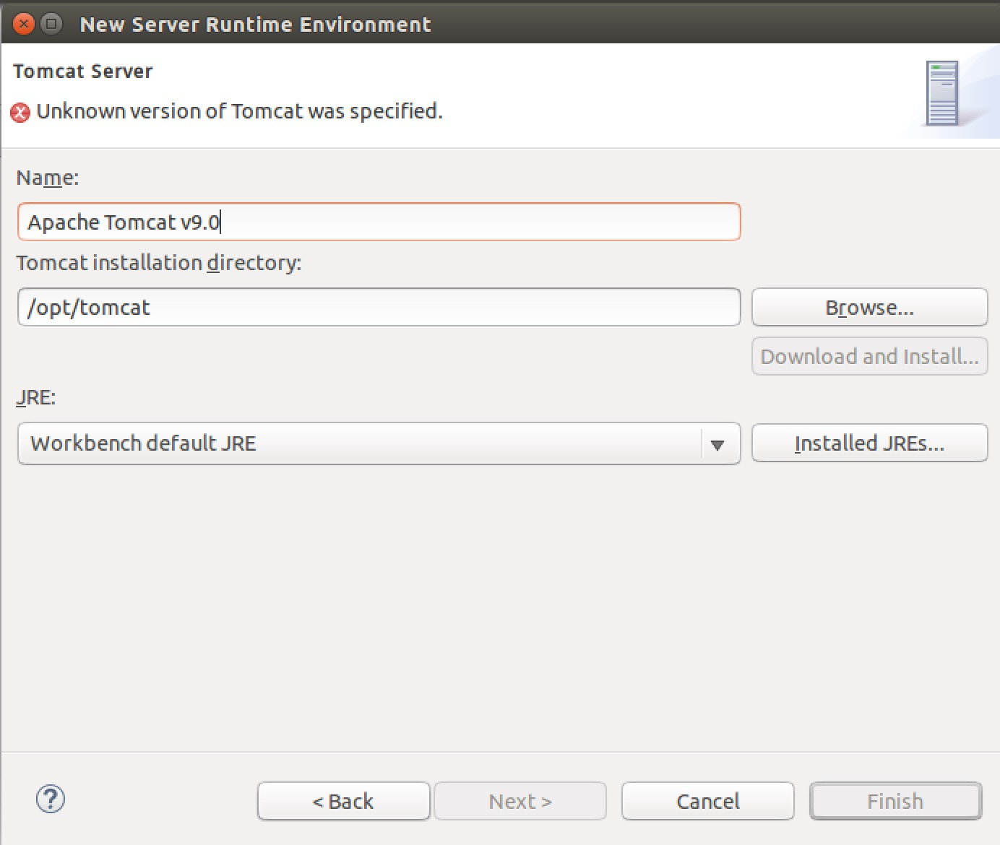
所以为了解决问题，我们就只能再安装一个 Tomcat 8.0 了。因为 Tomcat 的安装只需要解压到指定目录即可，所以安装多少个版本都是互不影响的。如果你还不知道怎么安装，请参考：Ubuntu 下 Tomcat 的配置。
安装 8.0 和 9.0 的唯一区别是，下载的源码版本不同，即 wget 这一步不一样，安装 8.0 可以在链接下载：
wget http://mirrors.cnnic.cn/apache/tomcat/tomcat-8/v8.0.32/bin/apache-tomcat-8.0.32.tar.gz
下载后可以解压到 /opt/tomcat8 这个目录，以便和之前的 /opt/tomcat 作区分。然后启动 Tomcat 8 当然就使用 sudo /opt/tomcat8/bin/catalina.sh start 这个命令了。
2) Eclispe 运行权限不够无法识别或执行 Tomcat 服务器 🔗
假设我们已经将 Tomcat 8.0 安装到了 /opt/tomcat8 这个目录。
由于最开始我们这个目录给除了 tomcat 用户外的其它用户的权限很小，也就是除了 tomcat 用户，其它用户都不能执行 Tomcat 甚至不能读取该目录。
所以如果我们的 Eclipse 是以普通用户权限运行的，那么它是没办法正确使用 Tomcat 的。
解决问题的办法有两个，第一种是更改 /opt/tomcat8 的权限，让普通用户能够访问并执行它；第二种是使用 root 权限来运行 Eclipse。这里把两种方法都写上。任选一种即可。
方法一：更改 /opt/tomcat8 的权限 🔗
打开终端，执行下面的命了即可，就是这么简单！也推荐就用这种做法：
cd /opt/
sudo chmod -R 775 tomcat8
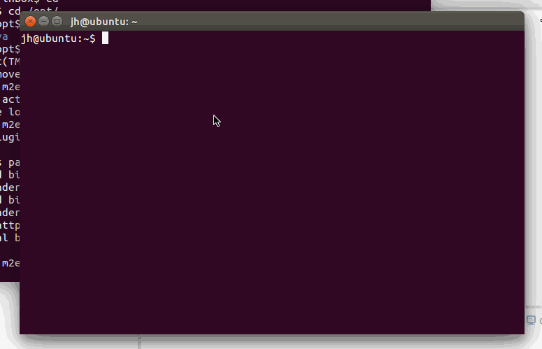
方法二：使用 root 权限运行 Eclipse 🔗
为什么把这个方法也写上呢？是因为使用 root 权限运行 Eclipse 的时候也会遇到问题：
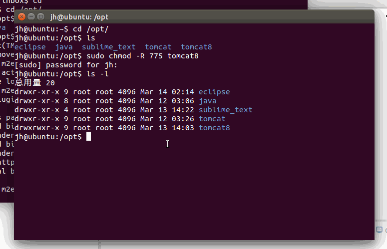
使用 root 运行 Eclispe 的时候，Eclispe 找不到 JAVA 运行环境了，也就是找不到 JRE 了。这和我们最初的环境变量设置有关。
那么如何解决问题呢？其实方法也有很多，可以修改环境变量，也可以用一种更巧妙的方式，就是将解压后的 jre/ 目录放在 eclipse.ini 所在的目录，也就是 /opt/eclipse/。
我们之前已经安装过了 JDK，JDK 的安装目录是 /opt/java，里面就包含了 JRE，也就是 JRE 的目录是 /opt/java/jre。好了，下面就将 jre/ 复制过去试试。
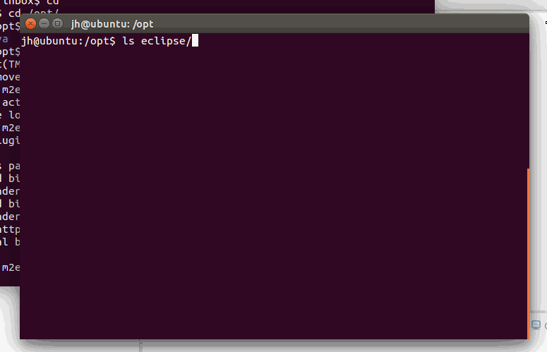
好了，可以看到现在 Eclipse 已经正常启动了。
更多方法可参考：Eclipse - no Java (JRE) / (JDK) … no virtual machine
之所以举这两个例子，还有一点就是说明，解决一个问题的方法可能有很多种，仁者见仁，智者见智。
2. 关联 Eclispe 和 Tomcat 🔗
假设我们上面是通过第一种方法解决的 Eclispe 不能使用 Tomcat 的问题。
接下来启动 Tomcat
/opt/eclispe/eclipse
然后选择菜单栏 Windows-->preferences，弹出如下界面：
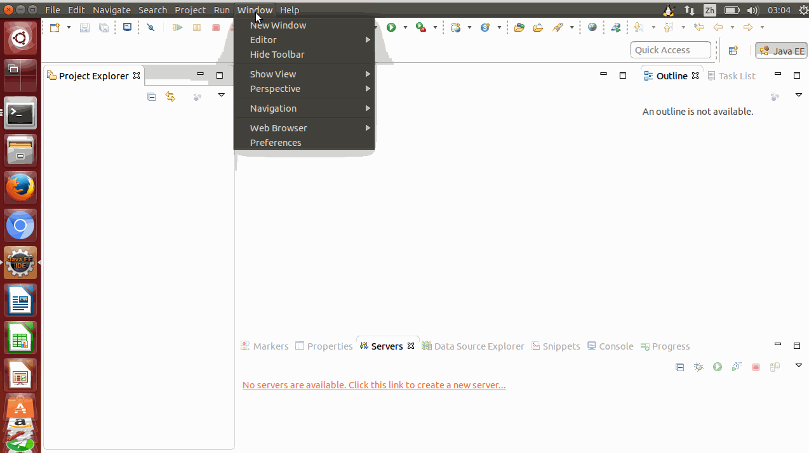
上图中，点击"add"的添加按钮，弹出选择 Tomcat 版本的界面。之前说到的 Eclipse 不能识别 Tomcat 9.0 就是这一步不能识别。我们已经又安装了 Tomcat 8.0，所以这里选择 Tomcat 8.0。
接着点击 Next，选择 Tomcat 的安装目录，并选择我们安装的 Java 环境：
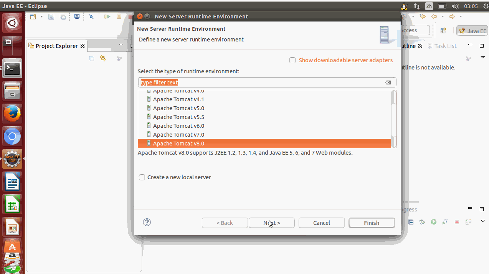
3. 使用 Eclipse 创建第一个项目 🔗
1) 新建动态网站项目 🔗
选择 File-->New-->Dynamic Web Project，创建 TomcatTest 项目：
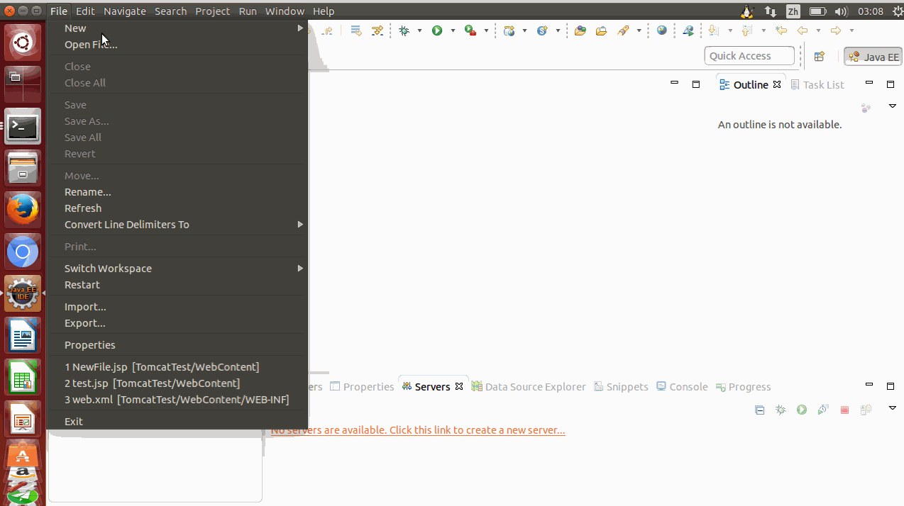
Eclipse 会自动选择默认的 Tomcat 版本。如果没有默认选择 Tomcat 的版本，则需求点击 New Runtime 按钮，选择我们刚才设置的 Tomcat 版本。
在Eclipse中只要创建一个Dynamic Web Project，就可以根据创建向导创建出一个典型 Java Web 站点的目录结构。除非有特殊需要，在大多数情况下都没有必要修改这个目录结构，这也是 Web 容器的缺省目录结构，我们只要直接使用即可。一般的目录结构如下：
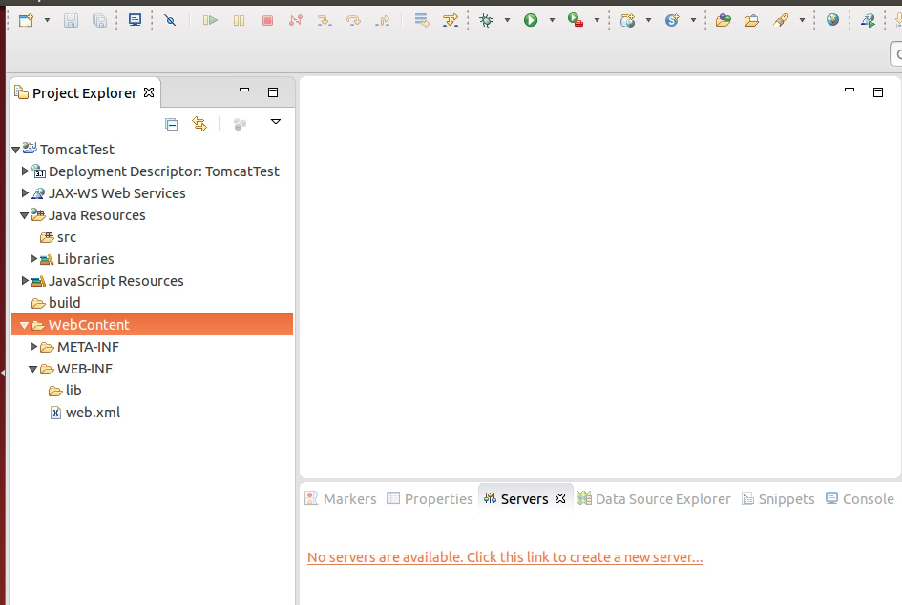
- Deployment Descriptor：部署描述符。部署描述符描述了组件、模块或应用程序（如Web应用程序或企业级软件）应该如何部署。
- JAX-WS Web Services：Java API for XML Web Services（JAX-WS）是 Java 程序设计语言一个用来创建 Web 服务的 API。
- build：放入编译之后的文件。
- WebContent：站点根目录。
WebContent (站点根目录)
|----META-INF (META-INF文件夹)
|----|---MANIFEST.MF (MANIFEST.MF配置清单文件)
|----WEB-INF (WEB-INF文件夹)
|----|----web.xml (站点配置web.xml)
|----|----lib (第三方库文件夹)
WEB-INF:是Java的WEB应用的安全目录。所谓安全就是客户端无法访问，只有服务端可以访问的目录。如果想在页面中直接访问其中的文件，必须通过web.xml文件 对要访问的文件进行相应映射才能访问。
META-INF:文件夹相当于一个信息包，目录中的文件和目录获得Java 2平台的认可与解释，用来配置应用程序、扩展程序、类加载器和服务。
2). 新建一个 JSP 文件 🔗
接下来在 WebContent 文件夹下新建一个 test.jsp 文件：
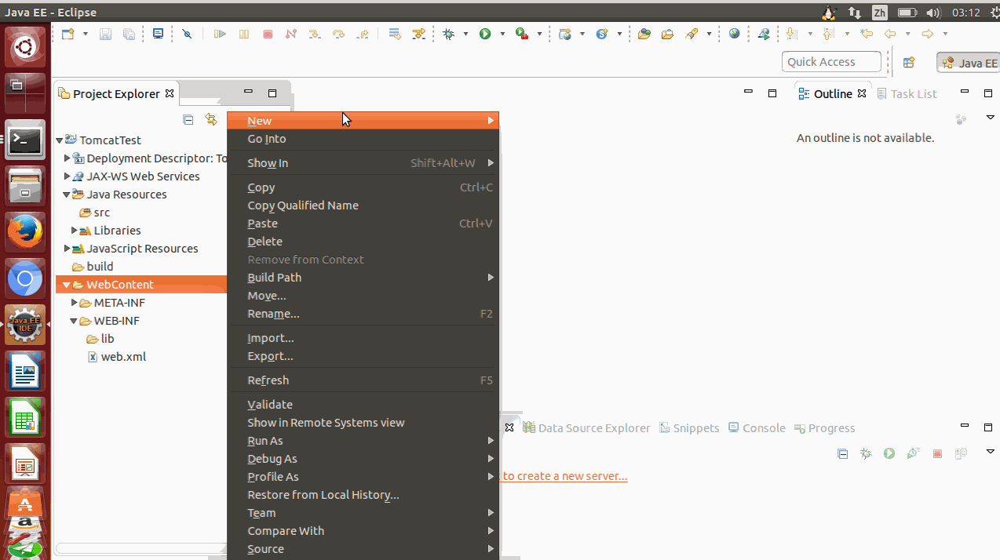
接着我们修改下 test.jsp 文件。代码如下所示：
<%@ page language="java" contentType="text/html; charset=UTF-8"
pageEncoding="UTF-8"%>
<!DOCTYPE html PUBLIC "-//W3C//DTD HTML 4.01 Transitional//EN" "http://www.w3.org/TR/html4/loose.dtd">
<html>
<head>
<meta http-equiv="Content-Type" content="text/html; charset=UTF-8">
<title>Tomcat Test</title>
</head>
<body>
<%
out.println("世界,你好!");
%>
</body>
</html>
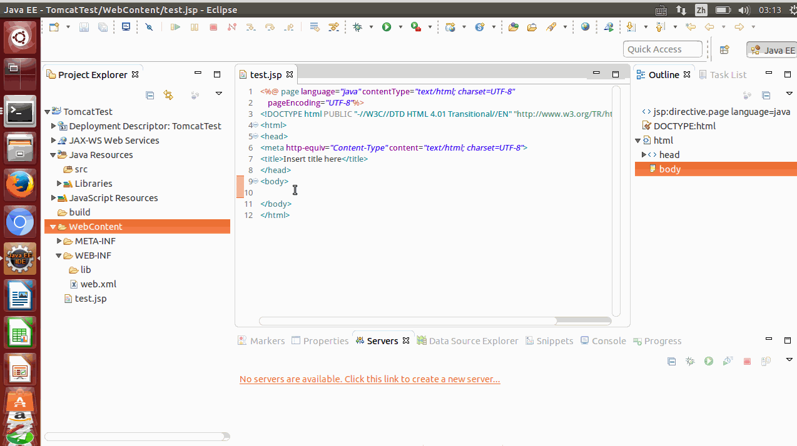
然后运行该项目：
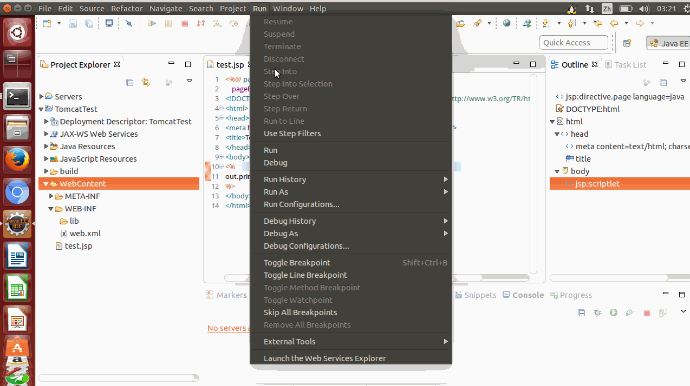
3). 新建一个 Servlet 文件 🔗
我们也可以使用以上环境创建 Servlet 文件，选择 File-->New-->Servlet：
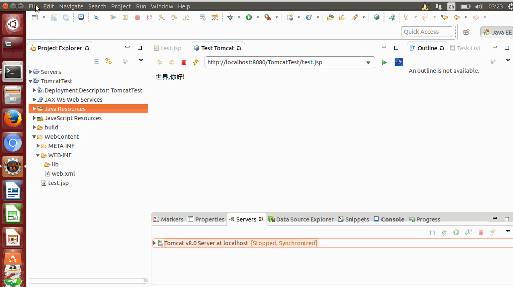
文件路径位于 TomcatTest项目的 /TomcatTest/src 目录下创建 “HelloServlet” 类，包为 “com.runoob.test”。
HelloServlet.java 代码如下所示：
package com.test.test;
import java.io.IOException;
import javax.servlet.ServletException;
import javax.servlet.annotation.WebServlet;
import javax.servlet.http.HttpServlet;
import javax.servlet.http.HttpServletRequest;
import javax.servlet.http.HttpServletResponse;
/**
* Servlet implementation class HelloWorld
*/
@WebServlet("/HelloWorld")
public class HelloWorld extends HttpServlet {
private static final long serialVersionUID = 1L;
/**
* @see HttpServlet#HttpServlet()
*/
public HelloWorld() {
super();
// TODO Auto-generated constructor stub
}
/**
* @see HttpServlet#doGet(HttpServletRequest request, HttpServletResponse response)
*/
protected void doGet(HttpServletRequest request, HttpServletResponse response) throws ServletException, IOException {
// TODO Auto-generated method stub
response.getWriter().append("Served at: ").append(request.getContextPath());
}
/**
* @see HttpServlet#doPost(HttpServletRequest request, HttpServletResponse response)
*/
protected void doPost(HttpServletRequest request, HttpServletResponse response) throws ServletException, IOException {
// TODO Auto-generated method stub
doGet(request, response);
}
}
关于 JSP 和 Servlet 的关系，这里简单作几点说明：
-
JSP 是 HTML 内嵌 JAVA 代码。从本质上讲，JSP 是 Servlet 的扩展，是简易版的 Servlet。Servlet 则完全和 HTML 分离开来，只运用在 JAVA 文件中。
-
JSP引擎从磁盘中载入JSP文件，然后将它们转化为servlet。这种转化只是简单地将所有模板文本改用println()语句，并且将所有的JSP元素转化成Java代码。
-
JSP引擎将servlet编译成可执行类。
然后我们在运行一下 HelloWorld.java：
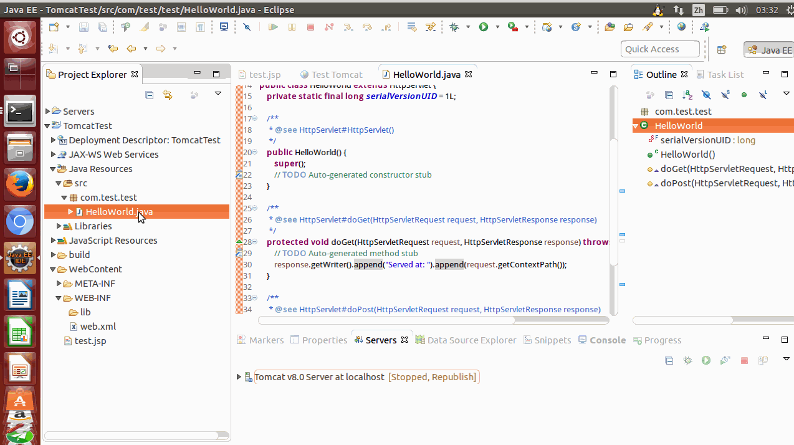
Github Issue: https://github.com/nodejh/nodejh.github.io/issues/19